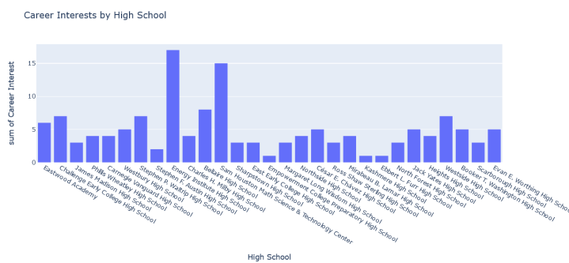

<!-- Texas Southern Hackathon February 11,2023. Donjana Allgood, Jerry Breda, Tiger Menser. --> 
<!DOCTYPE html>
<html lang="en"></html>
<head>
<meta name="Texas Southern" content="width=device-width, initial-scale=1">
<style>
* {box-sizing: border-box;}

body { 
  margin: 0;
  font-family: Arial, Helvetica, sans-serif;
}

.header {
  overflow: hidden;
  background-color: #f1f1f1;
  padding: 20px 10px;
}

.header a {
  float: left;
  color: black;
  text-align: center;
  padding: 12px;
  text-decoration: none;
  font-size: 18px; 
  line-height: 25px;
  border-radius: 4px;
}

.header a.logo {
  font-size: 25px;
  font-weight: bold;
}

.header a:hover {
  background-color: #ddd;
  color: black;
}

.header a.active {
  background-color: dodgerblue;
  color: white;
}

.header-right {
  float: right;
}

@media screen and (max-width: 500px) {
  .header a {
    float: none;
    display: block;
    text-align: left;
  }
  
  .header-right {
    float: none;
  }
}
</style>
</head>
<body>

<div class="header">
   
  <a href="#default" class="logo">Texas Southern University Survery</a>
  <div class="header-right">
    <a class="active" href="#hackathonChallenge">Hackathon Challenge</a>
  <!--  <a href="#DataSet">DataSet</a>
    <a href="#DataSet">DataSet</a>
    <a href="#DataSet">DataSet</a>
    <a href="#contact">Contact</a>
  --> 
  </div>
</div>
<div>
  <div class="intro">
    <h4> 
      The computer science department at Texas Southern University wants to increase its recruitment efforts to local Houston high schools. 
      To achieve this goal, they need to understand the factors that influence high school students to choose computer science as a major. 
      1000 students were surveyed, we have created five datasets to analyze the students input. 
     </h4>
      <head>
        <style>
            table, th, td {
                border: 0.5px solid white;
                border-collapse: collapse;
                padding: 6px;
                justify-content: center;
            }
            .transparent-style{
                background-color: #ffffff;
                opacity: .4;
            }
        </style>
    </head>
    <body style = "text-align:center">
       <!-- <h1> Major Factors </h1>-->
        <table>
            <tr>
                <tr>
                    <td>
                        <h1 style="text-align:center"> Major Factors </h1>  
                </td>
                </tr>
                    <td>
                        
                        <h3 style="text-align:center"> Ethnicity/Gender vs Career Interest </h3>  
                        
                        <p>- Asians are the minority. </p>  
                        <p>- Male and Female Dominant. </p>         
                        <p>- White people are the majority with 40 people. </p>    
                        <p>- Hispanics are the 2nd leading ethnicity, followed by African American. </p>             
        
                    </td>
                </tr> 
                <tr>
                    <td>
                        <h3 style="text-align:center"> High School vs Career Interest </h3>
                         
                        <p> - No direct correlation between high-school rating and interest in computer science. </p>
                        <p> - The schools that provide STEM programs have higher numbers of kids that are interested. </p>
                        <p> - Energy institute Highschool and Sam Houston Math Science & Technology Center have the highest number of kids that are interested. </p>             
                    </td>
                </tr> 
                <tr>
                    <td>
                        <h3 style="text-align:center"> Number of Math classes taken vs Career Interest</h3>   
                                    
                        <p> - Students who took less math classes have had more interest in computer science. </p>
                        <p> - Students who took six math classes are the least interested, while students who took two are more interested. </p>
                        <p> - A negative correlation relationship between students who are interested in computer science and students who took a higher number of math classes. </p>

                    </td>
                </tr> 
                <tr>
                    <td>
                        <h3 style="text-align:center"> Computers Owned vs Career Interest </h3>  
                                        
                        <p> - Granting a student with a computer would be benefical to increase their interest in cs. </p>
                        <p> - A positive correlation between the number of computers that are owned and interest in computer science. </p>
                        <p> - There is a substantial gap in interest with students that own five computers and students that do not own a computer. </p>

                    </td>
                </tr>
                <tr>
                    <td>
                        <h3 style="text-align:center"> Weekly hours studied vs Career Interest </h3>  
                                        
                        <p> - There is a negative correlation between hours studied and interest in computer science. </p>
                        <p> - The majority of students that are interested in computer science study less than 10 hours a week. </p>
                        <p> - This graph illustrates that the more hours that the student studies, the less prone they are to be interested. </p>
                    </td>
                </tr>
            </table> 
            <footer>
                <p> Created by: Donjana Allgood, Jerry Breda, Tiger Menser</p>
            </footer>